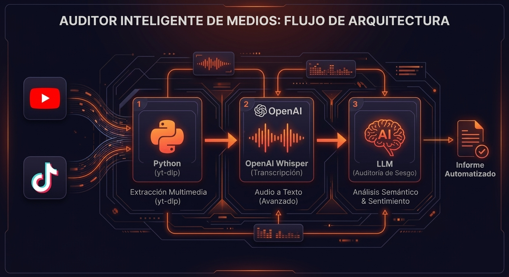
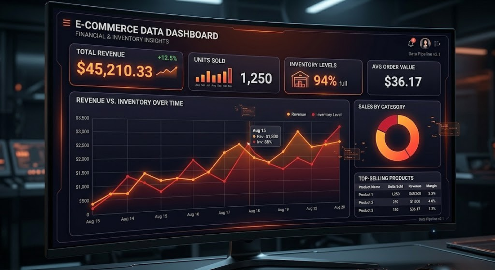
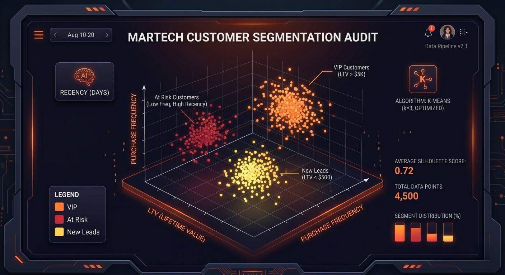

Casos de Estudio
Soluciones de Datos
que resuelven problemas.
No optimizo líneas de código por pasatiempo visual. Diseño y despliego arquitecturas orientadas a auditar flujos de información, estructurar datos masivos y optimizar el rendimiento financiero de marcas comerciales.

1. Auditor Inteligente de Medios
Pipeline multimodal en Python que extrae flujos de audio desde TikTok/YouTube, transcribe con Whisper y procesa auditorías de sesgos mediante LLMs.

2. E-commerce Data Pipeline
Infraestructura automatizada de ingesta, limpieza y ordenamiento de flujos de ventas comerciales. Optimizado para análisis predictivos de inventario masivo.

3. Motor de Segmentación MarTech
Aplicación analítica basada en Clustering K-Means para clasificar carteras de usuarios reales y generar copys hiper-personalizados mediante LLMs.